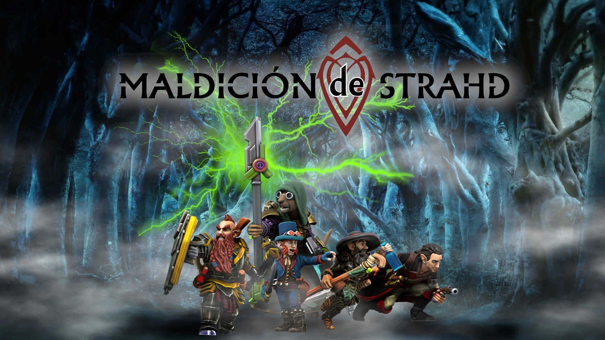

Monguito: Reloaded
Monguito: ReloadedLa Maldición de Strahd
11 / August / 2022 —
Compi

Recursos:
Cronología:
- 22/05/2022: Llegan a Barovia habiendo recibido cartas de un juego desconocido (Krit: Marioneta, Narudiel: Paladin, Cafrune: Cuervo, Vondal: Bestia, Gerold: Adivina). Los Vistani les dicen que visiten a Madame Eva. Rosa y Espino los hacen entrar en la Mansión Durst y al llegar al 3er piso todo cambia...
- 05/06/2022: Descubren la malvada naturaleza de la mansión. Un espectro casi mata a Narudiel. Obtienen la escritura del Molino Durst.
- 20/06/2022: Descubren los cuerpos de Rosa y Espino, encuentran un acceso secreto al sótano, dejan descansando los cuerpos de R y E. Encuentran a Sophaxis el perro nomuerto. Descubren una estatua de Strahd y un altar rodeado de agua.
- 03/07/2022: Una grotesca criatura compuesta de varios cuerpos fusionados los ataca, pero la derrotan. Huyen de la mansión mientras la misma colapsa sobre si misma. Strahd se aparece ante Narudiel. Llegan a Barovia. Compran un mapa a Stregg, el buhonero. Conocen a Ismark y hablan sobre Ireena.
- 17/07/2022: Arreglan pedir ayuda al cura Donavich a organizar el funeral de Kolyan Indirovich, padre de Ismark e Ireena; pero descubren que su hijo (Dooru) es un vampiro al cual alimenta con pueblerinos. Matan a Dooru. Ismark les cuenta que la gente venía desapariendo y que otros se convierten en zombie. Ismark les cuenta que Kolyan murió de miedo porque Strahd enviaba esbirros a hostigarlo por no entregarle a Ireena. Ismark les pide que lleven a Ireena a Vallaki.
- 07/08/2022: El cura Donavich admite sus crímenes, descubren que la zombificación de los Barovianos es provocada por zombies en un pozo de agua. Vondal lleva a cabo el funeral de Kolyan Indirovich. Deciden hacer pasar a Ireena por un miembro del grupo
- 21/08/2022:El cura Piotr Donavich es ejecutado (Ismark tira de la palanca para activar el patíbulo). Deciden renombrar a Ireena como Melina, quien ahora viste con pelo suelto, pantalones de montar y peto de armadura. Parten hacia la laguna Tser a cuyas orillas está el campamento Vistani. Ahí, Madame Eva les hace una lectura personalizada. Pueden ver las lecturas aquí.
- 04/09/2022:Continuan su camino hacia Vallaki, trepan la ladera del camino y cruzan el puente cerca de las cataratas. Siguen hasta las puertas de Barovia (Oeste) y ahi los encierra un druida con varios seres animados hechos de ramas. El druida huye y matan a las ramas. Llegan al viejo molino y notan que detrás hay un antiguo círculo de piedas al cual investigan. Estos megalitos tienen varios miles de años de antiguedad. Narudiel, Cafrune y Gerold van al Molino y descubren que está ocupado por Bella y Ofelia y su madre (que salió a vender). Ellas preparan las empanadas de sueños. Se muestran reacias a dejarlos pasar pero les muestran la cocina donde trabajan. Gerold deja la semilla para lucrativos planes comerciales y futuras refacciones del molino. Luego continúan explorando los monolitos hasta descubrir un templo subterráneo escondido con un altar con un tapiz mostrando una mujer cazadora. Al frente del altar, en textos en lengua druídica dice:
Dama del bosque,
ama del verdor,
te ofrezco mi sacrificio,
pido tu bendición.
Eres el ojo en la arboleda,
el ciervo en la alameda,
el lobo en la cordillera,
y quien da vida a la primavera.
Eres a quien todo cazador aclama,
y de las flores la mas delicada,
y la sangre vital que se errama,
sobre el suelo cada temporada.
Dama del bosque,
ama del verdor,
te ofrezco mi sacrificio,
pido tu bendición. - 18/09/2022: Mientras examinan el templo bajo los monolitos, un cuervo se posa en una roca e intenta advertirles sobre peligro. Las dos mujeres que vivían en molino se acercan a mirar qué hicieron ahí y luego de desaparecer por un instante, atacan al grupo. Su apariencia es monstruosa, como de brujas. Intercambian golpes hasta que un rayo de Vondal carboniza a Ofelia de forma inesperada, dejando sólo cenizas y algunos objetos. Bella, su hermana, se hace invisible y se retira. Revisan el molino y encuentran magia extraña en la cocina y liberan a 2 niños enjaulados (Freek y Myrthle) que se encuentran bien de salud. Los niños explican como las brujas les extraen los sueños durante la noche para hacer las empanadas de ensueño. Gerold en un momento de furia destroza las jaulas y luego incendia el molino. Observan hasta que se desmorona por completo. Continúan el camino hacia Vallaki sin problemas, aunque Cafrune ve que el mismo cuervo que les avisó los sigue. Se llevan a Freek y Myrthle hacia Vallaki porque sino deberían volver atrás a Barovia a dejarlos. De todas formas Freek no quiere volver a casa porque la madre lo ofreció a las brujas. Descubren que Vallaki es una ciudad protegida por una empalizada y el Burgomaestre, Barón Vargas Vallakovich los deja pasar luego de comentarles sobre las festividades semanales que se realizan. Esta vez es sobre un sol llameante. Habrá musica, baile, comida. Disfraces y carruajes. Todo irá bien. Pasean por la ordenada y cuidada ciudad hasta el centro donde está la posada Agua Azul y ahi comen, beben y Gerold hace una excelente performance que es opacada por la aparicion del queridísimo bardo local, Rictavio.
Etiquetas: